本オンボーディングの目的
- 簡単なアプリの作成を通じて、Swiftの基本を学び、配属先での業務に活かす。
- Swiftのロードマップに基づき、Swiftの網羅的な知識を実装レベルにまで持っていってもらう。
学習内容
- ログイン画面を表示する。
- メイン画面にデータを表示する。
- メイン画面へ移動可能にする。
- APIを叩いてデータを取得する。
- データを保存する。
- 取得したデータをリアルタイムで更新する。
- エラーを表示する
- チャット画面を作ってみる
- ログイン機能を作る。
必要な準備
- Xcode *必須
- Versionは15.2
- Apple Developerアカウント
概要
ダミーのログイン画面の作成を通じて、アプリ全体に関わる処理に関する知識を学びます。
本章で学ぶこと
完成イメージ
iPhone | iPad |
|
|


手順
Xcodeのプロジェクトを作る
- Xcodeを開き、Create a new Xcode projectを選ぶ。
- iOS > Appを選ぶ

- 任意の名前をつけ、プロジェクトを保存する。
GitHubのリポジトリを作る
- Source control navigator > Repositories > Remotes(画像参照)を右クリック

- New "App名" Remote...をクリックし、自分のGitHubアカウント情報を入力する。
- Personal access tokenについては、こちら を参考にし、前手順で指定されたscopeを持ったPersonal access tokenを発行し、登録する。
以上でGitHubとの連携は完了です。
画面表示のための下準備
- info.plistというファイルを開き、
Information Property List内にあるApplication Scene Manifestをマイナスボタンで削除する。 - SceneDelegate.swiftを物理削除する。
- AppDelegateから以下の二つの関数を削除する。
func application(_ application: UIApplication, configurationForConnecting connectingSceneSession: UISceneSession, options: UIScene.ConnectionOptions) -> UISceneConfiguration {
// Called when a new scene session is being created.
// Use this method to select a configuration to create the new scene with.
return UISceneConfiguration(name: "Default Configuration", sessionRole: connectingSceneSession.role)
}
func application(_ application: UIApplication, didDiscardSceneSessions sceneSessions: Set<UISceneSession>) {
// Called when the user discards a scene session.
// If any sessions were discarded while the application was not running, this will be called shortly after application:didFinishLaunchingWithOptions.
// Use this method to release any resources that were specific to the discarded scenes, as they will not return.
}
- AppDelegateクラス定義内に以下変数を追加する。
var window: UIWindow?
- ?(オプショナル型)については後述
- Main.storyboard, ViewControllerを削除する。
- 図のようにAppの設定 > TARGETSのApp名 > Info > Main storyboard file base name を削除する(写真は削除した後。)

- AppDelegateの
func application(_ application: UIApplication, didFinishLaunchingWithOptions launchOptions: [UIApplication.LaunchOptionsKey: Any]?) -> Bool内に
window = UIWindow(frame: UIScreen.main.bounds)
let storyBoard = UIStoryboard(name: "Login", bundle: nil)
let loginVC = storyBoard.instantiateViewController(withIdentifier: "LoginViewController")
window?.rootViewController = loginVC
window?.makeKeyAndVisible()
を追加します。※このままでは動きません。 次に、ログイン画面を作っていきます。
ログイン画面の表示
- AppDelegateが含まれているApp名のディレクトリで右クリックし、New Groupを選択すると、新たなディレクトリが作れる。名前は"Presentation"(画面表示に関わるファイルを格納するディレクトリ)にする。
- Presentationディレクトリの下に、ログイン画面に関わるファイルを格納する"LoginScene"ディレクトリを作成する。
- Loginディレクトリで右クリックし、New Fileを選択 > iOS > User Interfaceにある"Storyboard"を選択。名前は"Login"にし、保存。
- すると、下記のような白地のiPhoneが出てくると思います。ここにパーツを置き、画面を完成させます。

- LoginディレクトリでさらにNew File > iOS > SourceのSwift Fileを選択し、名前を
LoginViewControllerにする。 - そして、デフォルトで存在する
import foundationを削除したのちに以下のコードを記述し、LoginViewControllerクラスを作成する。
import UIKit
final class LoginViewController: UIViewController {}
- これがコードとstoryboardを橋渡ししてくれます。
- 再びLogin.storyboardに戻り、左側のDocument Outlineの赤枠で囲ったView Controllerをクリック > 右側のInspectorsの赤枠で囲ったCustom Class > ClassからLoginViewControllerを選択。そして同じく赤枠のIdentity > Storyboard IDにも同様に
LoginViewControllerを入力。

- これでコード上から参照できるようになりました。
- 右上の赤枠で囲った"➕"ボタン(以下、library)をクリックすると画面に配置できるパーツ一覧が出てくる。まず"Label"をクリックしたまま離さず、白地のiPhoneの上でクリックを離すと、Labelと書かれたパーツが画面上に配置される。

- ここで試しにXcode左上の再生ボタンを押してビルドしてみると、Labelと書かれた画面が出現する。

- これで画面表示まではされるようになりました。次に色々なパーツを組み合わせ、ログイン画面を作成していきます。
ログイン画面の作成
- libraryをクリックし、TextFieldを二つ、Buttonを一つ、先ほどのLabelの下に順に配置する。

- 基本的に、storyboardはパーツが平面上のどこにあるのかを指定するだけで、ここでは見た目的な部分に修正は加えません。見た目はViewControllerから整えていきます。
- Add Editor on Right(libraryの+ボタンの下、赤枠)によりxcodeの編集画面を2画面にし、片方のEditorをクリックした後LoginViewController.swiftファイルを開く。
- もう片方で開いているLogin.storyboard(開いてなければ開く)のLabelを、controlキーを押したままクリック離さずにLoginViewController.swiftファイル上ドラッグすると、図のように青い線と共に
Insert Outlet or Outlet Collectionと出てくる。

このタイミングでクリックを離し、StorageをStrongにし、nameをtitleLabelにすると、自動的に
@IBOutlet var titleLabel: UILabel!
というコードが出現する。しかしこのインスタンスはクラス内からしか参照しないため、@IBOutletとvarの間にprivateを記述することでそれを明示する。 4. 同様に、上から順にprivateの@IBOutletプロパティであるemailField, passwordField, loginButtonを作成すると、LoginViewController.swiftは以下のようなコードになる。
import UIKit
final class LoginViewController: UIViewController {
@IBOutlet private var titleLabel: UILabel!
@IBOutlet private var emailField: UITextField!
@IBOutlet private var passwordField: UITextField!
@IBOutlet private var loginButton: UIButton!
}
- 各パーツのデザインを作る。まず、titleLabelのテキストを"Login"にしたいので、
titleLabel: UILabel!のすぐ横から以下のコードを記述する。
@IBOutlet private var titleLabel: UILabel! {
didSet {
titleLabel.text = "Login"
}
}
- これで、LoginViewController上でtitleLabelがインスタンス化された(Setされた)際、titleLabelのtextが"Login"になることを示している。
- 同様に、各パーツの
didSet内に下記を記述する。
// emailField内
emailField.placeholder = "email"
// passwordField内
passwordField.placeholder = "password"
// loginButton内
loginButton.setTitle("Login",
for: .normal)
各パーツの位置調整
- 以上の配置は、様々な画面の大きさがあるiOSに対して柔軟性に欠ける。例えば、iPad上に表示しようとした際には以下のようになってしまう。そのため、以下のAutoLayoutの設定を行うことにより、相対的な配置に変える必要がある。

- まず、以下の手順ですべてのパーツを水平方向の中心に持っていきたい。Title Labelに対して、先程のようにcontrolボタンを押しながらドラッグして出てくる青いポインターを、上部のViewにまでドラッグすると、下図のような黒いポップアップが出てくる。これの"Center Horizontally"をクリックすると、CenterX(水平方向の中心に位置する)の制約(Constraint)が付与される。
- これはすなわち、View(画面全体)に対して、titleLabelは水平方向の中心に配置してください、という制限を我々がかけたことになる。

- 他のパーツについても同様にCenterXのConstraintをViewに対して付与する。
- 続いて、以下の手順で全てのパーツをY軸方向に50ずつ離して配置する。まず、PasswordFieldにViewに対してCenter VerticallyのConstraintを付与する。
- 3.で付与されたConstraintをクリックすると、図のようにConstraintの詳細を設定できる部分が開くので、こちらのConstantに25を入力する。

- emailFieldから今度はpasswordFieldに対して、"vertical spacing"のconstraintを付与する。4.同様に付与されたConstraintを開き、Constantを50に設定する。
- 同様にtitleLabelからemailField, loginbuttonからpasswordFieldに対してconstantが50のvertical spacingを付与する。
- テキストフィールドの幅が少し狭いので、emailField, passwordFieldそれぞれに対し、widthのconstantが220のconstraintを設定する。
- 以上により、画面の大きさに関わらず、違和感のない配置にする事ができる。

各技術の説明
AppDelegate.swift
- アプリ全体の変化に関わるイベントを処理するクラス。
- アプリ全体の起動/停止に伴って実行される
didFinishLaunchingWithOptions,applicationWillTerminateだけでなく、画面に関わるライフサイクルイベントもSceneDelegate同様、処理できる。
どのようなイベントがあるのか詳細はApp Statesを参照してください。 - 例えば、アプリを開いた際に画面ロックするかsessionの状態によって決めるメソッドを呼び出すなどで使われる。
- ※Delegate(委譲)とは、自分と異なるクラスに何か処理をさせること。このAppDelegateは、アプリの中心であるUIApplicationのインスタンスがAppDelegateというクラスに上記の処理をDelegateしていると言える。
SceneDelegate.swift
- 2画面表示などにより複数のViewインスタンスが必要になったため、それぞれのViewの状態を管理するためのクラス。
- 担っている処理はAppDelegateのアプリライフサイクルに対する処理と同様。
UIWindow
- アプリの画面を表すクラス。
- このクラスのインスタンスにより画面上にパーツが配置され、またこれが画面上で起こるイベントを受け取る。
オプショナル型
- 変数定義の際、クラス名の末尾に?をつけると、その変数がnil許容であることを示す。その状態ではその変数はラップされており、内部の値を使うためには以下のいずれかの方法でアンラップしてあげなくてはならない。
if let構文
var varA: ClassA?
varA = ClassA()
print(varA) // 出力: Optional(ClassA(...))
// varAがnilじゃない時のみ、アンラップしたvarAと共に{}内の処理を実行する。
if let varA {
print(varA) // 出力: ClassA(...)
}
guard let構文
var varA: ClassA?
varA = ClassA()
print(varA) // 出力: Optional(ClassA(...))
// guardはその条件がtrueの場合のみ、その下の行に続く処理を継続できる構文。falseならelse以下の処理をすることになるため、ここではnilの場合にelseに行くことになる。
guard let varA else { // nilの場合の処理 }
print(varA) // 出力: ClassA(...)
- フォースアンラップ(強制アンラップ)法(非推奨)
var varA: ClassA?
varA = ClassA()
print(varA) // 出力: Optional(ClassA(...))
// !マークをつけるだけ。しかし、nilだとクラッシュするため、必ずアンラップできる事が保証できない場合、非推奨。
print(varA!) // 出力: ClassA(...)
storyboard
- UI上でパーツを並べて画面を作るツール。
- 中身はxibファイル(xmlで部品のレイアウトを記述したもの)となっており、この形でXcode上で認識される。
- Swiftでは大きく分けてUIKit, SwiftUIの2種類のiPhoneアプリ作成用フレームワークがあり、こちらはそのうち前者で多用される。
AutoLayout
- 上下左右の4方向に大きさ・長さの制約をかけることで、各パーツのサイズをあらゆる画面の大きさに対応できるようにした方法。
- いろんな種類の制約のかけ方がある。詳しくはこちら。
各技術の理解
AppDelegate
AppDelegateの中に以下のコードを書き、コントロールセンターを開く→閉じる→アプリをバックグラウンドに入れる(注: アプリを終了させないこと)→戻る とすると、active→inactive→active→inactive→background→(inactive)→activeと呼ばれる事がわかる。 ライフサイクルがこのようになっており、各遷移に伴ってAppDelegateの関数が呼ばれるためである。
// Inactive→Active
func applicationDidBecomeActive(_ application: UIApplication) {
print("become active")
}
// Inactive→Background
func applicationDidEnterBackground(_ application: UIApplication) {
print("enter background")
}
// Inactive→Background
func applicationWillResignActive(_ application: UIApplication) {
print("become inactive")
}
概要
メイン画面およびそこに表示するデータを作成し、MVVMパターンというデータ表示とデータ作成部分を分割するアーキテクチャを学びます。
本章で学ぶこと
完成イメージ
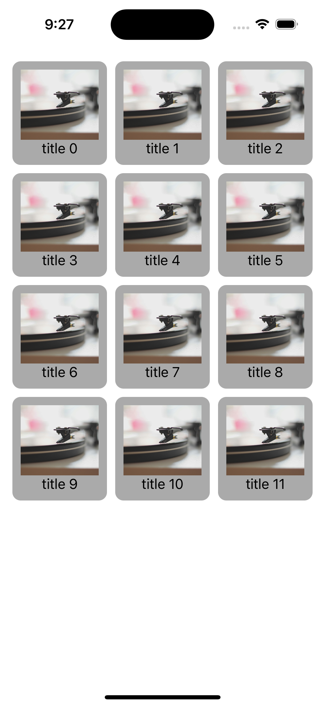
手順
メイン画面作成
- まずは一章と同様の手順により、メイン画面である画像リスト画面ディレクトリ(ImageListScene)を作成していく。
- ImageList.storyboardを作成し、"+"ボタンで
Collection Viewを選択、画面いっぱいに広げ、SafeAreaに四方を合わせたConstraintを設定してください。
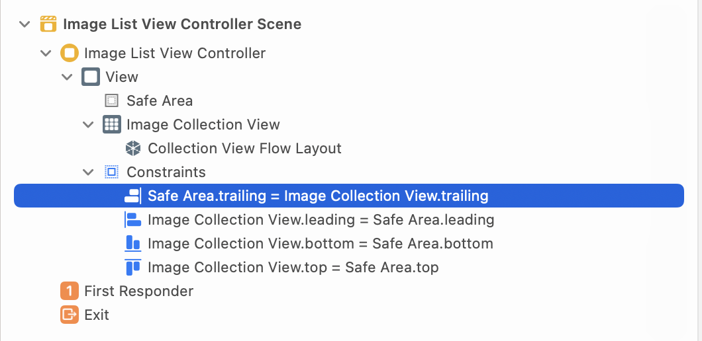 ImageListViewController.swiftを作成し、以下のコードを記述してください。
import UIKit
final class ImageListViewController: UIViewController {
override func viewDidLoad() {
super.viewDidLoad()
}
}
imageCollectionViewという名前で先ほど追加したcollection viewをIBOutlet接続し、storyboard IDにImageListViewControllerを入力する。AppDelegateで最初の画面を一旦上記ImageViewControllerに置き換える。
didFinishLaunchingWithOptions内を以下に書き換えてください。
window = UIWindow(frame: UIScreen.main.bounds)
window?.makeKeyAndVisible()
let storyboard = UIStoryboard(name: "ImageList",
bundle: nil)
if let viewController = storyboard.instantiateViewController(withIdentifier: "ImageListViewController") as? ImageListViewController {
window?.rootViewController = viewController
}
return true
CollectionViewにデータを表示する
- このままではまだ白い画面が映っているだけだと思います。以下の手順により、セルに表示するデータを作成します。
Views、ViewModels、ViewControllersというフォルダをImageListScene配下に作成し、ViewControllersの中に、上記で作成したstoryboardとViewControllerファイルを入れる。
- この
ViewModelsがデータとモデルをつなげる橋渡しをします。
Views配下で、ファイル作成時にEmptyを選び、ImageListCellと入力し、xibファイルを作成する。上記で作成できたxibファイルに"+"から、CollectionViewに表示するセルであるCollection View Cellを選び、適当な場所に配置する。そこへImage View、Labelを入れ、以下のようにConstraintを付加する。Custom ClassのClass部分とCollection Reusable ViewのIdentifierにImageListCellを入力する。
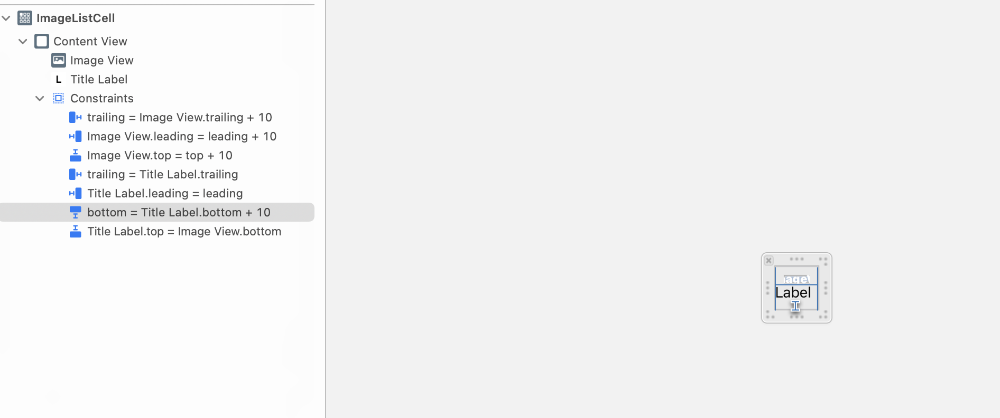
- 同じく
Views配下に、ImageListCell.swiftを作成。以下コードを入力、IBOutletを作成する。
- UIの初期設定を行う
setupUI()はImageListCellの中でしか使わない関数なので、private拡張の中に入れる。- 内部でしか使わない関数は必ずprivate拡張の中に入れる。そうすることで、関数が内部でしか使われていないことを明示でき、可読性が上がる。
import UIKit
final class ImageListCell: UICollectionViewCell {
// MARK: Private properties
@IBOutlet private var imageView: UIImageView! {
didSet {
imageView.contentMode = .scaleAspectFill
}
}
@IBOutlet private var titleLabel: UILabel! {
didSet {
titleLabel.textAlignment = .center
}
}
override func awakeFromNib() {
setupUI()
}
}
// MARK: - Private functions
private extension ImageListCell {
func setupUI() {
backgroundColor = .lightGray
layer.cornerRadius = 10
}
}
- 表示するデータを定義する、
ImageModelを作成する。
- ルート階層(
Presentationと同じ階層)にDomainディレクトリを作成する。 - その下に
Modelsディレクトリを作成。 ImageModel.swiftを作成、以下を記述する。
typealias ImageID = String
struct ImageModel {
let id: ImageID
let title: String
let imageURLString: String
let createdAt: String
}
- typealiasとは既存のクラスの組み合わせで新しいクラスを作成する際に用いられる。
- いよいよデータ部分であるModelとViewを結合する、ViewModelを実装する。
ViewModels配下に、ImageListCellのViewModelである、ImageListCellViewModel.swiftとImageListViewのViewModelであるImageListViewModel.swiftを作成する。 ImageListCellViewModel.swiftに下記を記述する。
import Foundation
protocol ImageListCellViewModelOutput {
var title: String { get }
var imageURLString: String { get }
}
typealias ImageListCellViewModelProtocol = ImageListCellViewModelOutput
extension ImageListCellViewModel {
struct Input {
let title: String
let imageURLString: String
}
}
final class ImageListCellViewModel: Hashable {
// MARK: Private properties
let input: Input
init(input: Input) {
self.input = input
}
}
// MARK: - ImageListCellViewModelOutput
extension ImageListCellViewModel: ImageListCellViewModelOutput {
var title: String {
return input.title
}
var imageURLString: String {
return input.imageURLString
}
}
"ViewModelクラス名前"OutputはViewに影響を及ぼす関数・変数を、"ViewModelクラス名前"Inputは逆にViewから影響を及ぼされ、ViewModel内への影響を及ぼす関数・変数を記述するプロトコルである。(後者は今回は出てこないが、また後ほど出てくる。)ViewModelで定義される変数・インスタンスはInputという構造体を定義し、そこから依存性注入する。
ImageListViewModel.swiftに下記コードを記述する。
protocol ImageListViewModelOutput {
var rows: [ImageListCellViewModel] { get }
}
typealias ImageListViewModelProtocol = ImageListViewModelOutput
final class ImageListViewModel {
// MARK: Private properties
private var data = [ImageListCellViewModel]()
init() {
fetchData()
}
}
// MARK: - Private functions
private extension ImageListViewModel {
func fetchData() {
var dummyData = [ImageModel]()
// ダミーデータ作成
for i in 0..<12 {
dummyData.append(.init(id: "\(i)",
title: "title \(i)",
imageURLString: "https://images.unsplash.com/5/unsplash-kitsune-4.jpg?ixlib=rb-0.3.5&ixid=eyJhcHBfaWQiOjEyMDd9&s=bc01c83c3da0425e9baa6c7a9204af81",
createdAt: "2022-04-01"))
}
data = dummyData.map { self.makeCellViewModel($0) }
}
func makeCellViewModel(_ model: ImageModel) -> ImageListCellViewModel {
.init(input: .init(title: model.title,
imageURLString: model.imageURLString,
createdAt: model.createdAt))
}
}
// MARK: - ImageListViewModelOutput
extension ImageListViewModel: ImageListViewModelOutput {
var rows: [ImageListCellViewModel] {
return data
}
}
- ダミーデータ作成部分は後ほど、APIをfetchする処理に書き換えます。
- まずは
ImageListCellViewModelとImageListCellのデータを結合(binding)するため、ImageListCell.swiftに下記コードを追加する。
final class ImageListCell: UICollectionViewCell {
// MARK: Public properties
var viewModel: ImageListCellViewModelProtocol! {
didSet {
setupBindings()
}
}
...
}
// MARK: - Private functions
private extension ImageListCell {
...
func setupBindings() {
setImage()
titleLabel.text = viewModel.title
}
func setImage() {
imageView.image = UIImage(data: try! Data(contentsOf: URL(string: viewModel.imageURLString)!))
}
}
- これでviewModelのOutputのデータがViewに表示され(つまり、Viewに影響を及ぼし)ました。
- UICollectionViewに表示するデータを扱うクラスである、
ImageListViewController+ImageDataSource.swiftを作成し、以下コードを記述する。
import UIKit
final class ImageDataSource: UICollectionViewDiffableDataSource<Int, ImageListCellViewModel> {
init(_ collectionView: UICollectionView) {
super.init(collectionView: collectionView) { collectionView, indexPath, viewModel in
guard let cell = collectionView.dequeueReusableCell(withReuseIdentifier: "ImageListCell",
for: indexPath) as? ImageListCell
else {
fatalError("Failed to dequeue cell with reuse identifier ImageListCell")
}
// cellにviewModelを設定する。
cell.viewModel = viewModel
return cell
}
}
}
// MARK: - Public functions
extension ImageDataSource {
func apply(_ items: [ImageListCellViewModel]) {
var snapshot = NSDiffableDataSourceSnapshot<Int, ImageListCellViewModel>()
snapshot.appendSections([0])
snapshot.appendItems(items)
DispatchQueue.main.async {
self.apply(snapshot,
animatingDifferences: false)
}
}
}
- DiffableDataSourceとは、CollectionViewに表示するデータを、それぞれ一意のデータとしてその差分を取って追加・削除を行う方法。詳しくはこちら
- DispatchQueueとは、並列処理を行うキューを提供するクラス。
- ここで
ImageListCellViewModelとImageListCellが結合する。
ImageListViewController.swiftで下記コードを記述し、dataSource、データの結合(binding)を設定する。
final class ImageListViewController: UIViewController {
// MARK: Public properties
var viewModel: ImageListViewModel!
@IBOutlet private var imageCollectionView: UICollectionView! {
didSet {
// CollectionView, TableViewにカスタムセルを表示するために必須の処理。
imageCollectionView.register(UINib(nibName: "ImageListCell",
bundle: nil),
forCellWithReuseIdentifier: "ImageListCell")
}
}
private lazy var dataSource = ImageDataSource(imageCollectionView)
override func viewDidLoad() {
super.viewDidLoad()
setupBindings()
}
}
private extension ImageListViewController {
func setupBindings() {
dataSource.apply(viewModel.rows)
}
}
- これでデータが表示されるようになりましたが、CollectionViewのセルの見た目がかなりぐちゃぐちゃになっています。
CollectionViewの整形
- これの見た目をいい感じにしていきます。そのためには、
UICollectionViewFlowLayoutを使用します。
ImageListViewController.swiftに以下変数定義を記述する。
final class ImageListViewController: UIViewController {
...
private lazy var collectionViewLayout: UICollectionViewFlowLayout = {
let margin: CGFloat = 15
let spacing: CGFloat = 10
let itemHeight: CGFloat = 125
let screenWidth = UIScreen.main.bounds.width
let itemsPerRow: CGFloat = 3
let totalMargin = margin * 2
let totalSpacing = spacing * (itemsPerRow - 1)
let itemWidth: CGFloat = (screenWidth - totalMargin - totalSpacing) / itemsPerRow
let layout = UICollectionViewFlowLayout()
layout.scrollDirection = .vertical
layout.minimumLineSpacing = spacing
layout.minimumInteritemSpacing = spacing
layout.itemSize = CGSize(width: itemWidth,
height: itemHeight)
layout.sectionInset = UIEdgeInsets(top: margin,
left: margin,
bottom: margin,
right: margin)
return layout
}()
}
- 1.をCollectionViewのdidSetに追記する。
@IBOutlet private var imageCollectionView: UICollectionView! {
didSet {
...
imageCollectionView.collectionViewLayout = collectionViewLayout
}
}
- セルの大きさが決まり、完成図のようなセルになったと思います。
- 紫色のワーニングがたくさん出てくるかと思われますが、一旦は放置しましょう。後ほど修正します。
各技術の説明
CollectionView/TableView
- 前者は同じ構造の複数のデータを決まったレイアウトで一覧表示するのに使われ、後者は単一の列で複数のデータを表示するのに使われる。
- データの表示単位をセル(
UICollectionViewCell/UITableViewCell)と呼び、後述のCustom Cellにレイアウトを作成する。- 例えば、今回のようにimageとtitleを表示するのであれば、Cellのファイル(.swift, .xibファイル両方)で表示単位であるtitleとimageがどのように表示されるのかを定義している。
- また、一度作成されたセルは画面上から消えた後、別のデータを表示するために再利用(reuse)される。セルから前に表示していたデータを消すために
prepareForReuse()と呼ばれる関数をoverrideし、データを初期化するコードを記述する事が多い。(FIFOのキューにセルが次々に入っては出ていくイメージなので、セルの作成/再利用はdequeueとも呼ばれる。)
- sectionという区切りで各itemをグループ化できる。
- データの表示にはDataSourceと呼ばれるものを用い、CollectionViewであれば
UICollectionViewDataSourceまたはUICollectionViewDiffableDataSourceが用いられる。 - セルをタップした時に行う処理はdelegateクラスを継承し、定義する。CollectionViewであれば
UICollectionViewDelegateが用いられる。
Custom Cell
- 自分でセルのレイアウトを決める時に作成する、標準の
UICollectionViewCell/UITableViewCellを継承したクラス。 - 多くの場合xibファイルと組み合わせて作成するが、その場合reuseIdentifierと呼ばれる、セルの作成/reuseの際に参照される一意の値を設定する必要がある。
- また、上記Custom CellをcollectionViewでdequeueするためには、collectionViewで上記セルを
register()する必要がある。詳しくはこちら。
MVVMアーキテクチャ
- Modelがデータを、Viewが表示を、そしてViewModelがModelの取得とそれによって生じた変化に対しViewへの反映を行うようにしたアーキテクチャ。
- ViewとViewへのデータ表示を単一のViewContrllerで行うよりもコード量が少なくなり複雑性が下がるため、可読性が上がるというメリットがある。
- ViewModel中でViewModelへの変化を起こすInput, ViewModelからViewに変化を及ぼすOutputに分けられる。
- ViewModelの状態をViewに反映できるように繋げることをBindingと呼ぶ。
DiffableDataSource
- セルの表示を担うDataSourceのうち、差分の更新を改良したもの。こちらに詳細を記述している。
- 差分によって別々のセルとして扱うというその特性上、それぞれのセルがユニークでなければならず、セルのデータ表示に使われるViewModelはHashable(一意に定まる事が保証されたクラス)に基づいている必要がある。
DispatchQueue
- 通常、iOSでは一つのメインスレッドと複数のサブスレッドで処理が実行される。
- メインスレッドでは基本的にはUIに関する処理、サブスレッドではそれ以外の処理が非同期に実行される。
- DispatchQueueは処理をどのスレッドで行うのかを指定できる。時間のかかる処理を非同期で行うのに頻繁に用いられる。
各技術の理解
TableView
- 二つのdataSourceへの理解
概要
ログイン後にメイン画面に遷移するコードを実装し、Coordinatorパターンによる画面遷移方法を学びます。
本章で学ぶこと
完成イメージ
手順
Coordinatorの作成
- まずログイン画面からメイン画面に遷移するためのCoordinatorを作成していきます。
LoginCoordinator.swiftをLoginSceneディレクトリに作成し、以下のコードを記述する。
import UIKit
final class LoginCoordinator {
private let window: UIWindow
private let navigationController = UINavigationController()
init(window: UIWindow) {
self.window = window
}
func start() {
showLogin(in: navigationController)
}
}
- NavigationControllerとは、ViewControllerをスタックさせ表示させるためのViewControllerです。詳しくは後述。
showLogin(in:)はこのクラス内でしか実行しないため、以下のようにprivateメソッドとして上記コードの下に記述する。
// MARK: - Private Functions
private extension LoginCoordinator {
func showLogin(in navigationController: UINavigationController) {
let storyboard = UIStoryboard(name: "Login",
bundle: nil)
if let vc = storyboard.instantiateViewController(withIdentifier: "LoginViewController") as? LoginViewController {
navigationController.setViewControllers([vc],
animated: true)
window.rootViewController = navigationController
}
}
}
- 立ち上がりの画面をログイン画面に戻すため、
AppDelegate内の処理を書き換える。didFinishLaunchingWithOptionsの中を以下に置き換え、クラス変数にprivate var loginCoordinator: LoginCoordinator?を追加する。
func application(_ application: UIApplication, didFinishLaunchingWithOptions launchOptions: [UIApplication.LaunchOptionsKey: Any]?) -> Bool {
// 一つのスクリーンを表すインスタンス。Keyになっているものがユーザーのアクションを受け取る。
window = UIWindow(frame: UIScreen.main.bounds)
window?.makeKeyAndVisible()
showLoginScreen()
return true
}
AppDelegateのprivate関数として、showLoginScreen()を定義する。
func showLoginScreen() {
if let window,
loginCoordinator == nil {
loginCoordinator = LoginCoordinator(window: window)
loginCoordinator?.start()
}
}
- これでCoordinatorがstartした際にLogin画面が立ち上がる、Coordinator基本パターンが出来上がりました。
メイン画面にCoordinateする
- いよいよCoordinatorの最大の特徴である、画面間の遷移を実装していきます。
ImageListSceneにImageListCoordinator.swiftを作成し、以下のコードを記述する。
import UIKit
final class ImageListCoordinator {
// MARK: Private properties
private let navigationController: UINavigationController
init(navigationController: UINavigationController) {
self.navigationController = navigationController
}
func start() {
showImageListScreen()
}
}
private extension ImageListCoordinator {
func showImageListScreen() {
let storyboard = UIStoryboard(name: "ImageList",
bundle: nil)
if let viewController = storyboard.instantiateViewController(withIdentifier: "ImageListViewController") as? ImageListViewController {
navigationController.pushViewController(viewController,
animated: true)
}
}
}
- しかしこのままではLogin画面でのログインボタン押下イベントをImageListCoordinatorで検知する事ができません。コード上で両者が繋がっていないためです。ここで登場するのが、Delegateメソッドです。
LoginCoordinatorに以下を記述します。
protocol LoginCoordinatorDelegate: AnyObject {
func goToMain()
}
final class LoginCoordinator {
...
// MARK: Public properties
weak var delegate: LoginCoordinatorDelegate?
...
}
private extension LoginCoordinator {
func showMain() {
delegate?.goToMain()
}
}
- showMainを呼ぶと、delegate先でgoToMainの処理が実行されるようになりました。
AppDelegateに下記を追記する。
...
// MARK: - Private functions
private extension AppDelegate {
func showLoginScreen() {
if let window,
loginCoordinator == nil {
loginCoordinator = LoginCoordinator(window: window)
loginCoordinator?.delegate = self // <-- 追記
loginCoordinator?.start()
}
}
func showImageList() {
let imageListCoordinator = ImageListCoordinator(navigationController: navigationController)
imageListCoordinator.start()
}
...
}
...
// MARK: - LoginCoordinatorDelegate
extension AppDelegate: LoginCoordinatorDelegate {
func goToMain() {
showImageList()
}
}
- これでLoginCoordinatorのdelegateにAppDelegateが入ることにより、LoginCoordinatorで
goToMainが実行された場合、Delegate先であるAppDelegateでshowImageList()が実行されるようになりました。
LoginViewControllerでボタンの処理を追記する。
protocol LoginViewControllerDelegate: AnyObject {
func LoginViewControllerDidRequestToShowMainScreen()
}
final class LoginViewController: UIViewController {
weak var delegate: LoginViewControllerDelegate?
...
@IBOutlet private var loginButton: UIButton! {
didSet {
loginButton.setTitle("Login",
for: .normal)
loginButton.addAction(.init { [weak self] _ in
self?.delegate?.LoginViewControllerDidRequestToShowMainScreen()
},
for: .touchUpInside)
}
}
}
- 最後に、
LoginViewController.swiftのDelegate処理をLoginCoordinatorに委譲するために、LoginCoordinator.swiftに以下を記述する。
// MARK: - LoginViewControllerDelegate
extension LoginCoordinator: LoginViewControllerDelegate {
func LoginViewControllerDidRequestToShowMainScreen() {
showImageList()
}
}
- こうすることで、loginButton押下時にimageList画面に遷移する事ができるようになりました。
タブバーの実装
- これでCoordinatorによってLogin画面からImageList画面に遷移できるようになりましたが、本アプリは複数のメイン画面から構成されるため、切り替えを簡単にするためのタブバーを実装しましょう。それには
UITabBarControllerと呼ばれるクラスを用います。
BaseTabSceneを作成し、BaseTabViewController.swiftを作成、以下のコードを記述する。
import UIKit
final class BaseTabViewController: UITabBarController {
class func initialize(navigationControllers: [UINavigationController]) -> BaseTabViewController {
let viewController = BaseTabViewController()
viewController.setViewControllers(navigationControllers,
animated: false)
viewController.setupUI()
return viewController
}
}
// MARK: - Private properties
private extension BaseTabViewController {
func setupUI() {
setupTabBar()
}
func setupTabBar() {
let appearance = UITabBarAppearance()
appearance.backgroundColor = .yellow
UITabBar.appearance().standardAppearance = appearance
UITabBar.appearance().scrollEdgeAppearance = appearance
tabBar.isTranslucent = false
tabBar.tintColor = .black
}
}
- UITabBarControllerの構成→setViewControllersにより設定されたNavigationController全てについてタブを作成します。タブごとのタイトル、画像は各ViewControllerで実装します。
BaseTabCoordinator.swiftを作成、以下のコードを記述する。
import UIKit
final class BaseTabCoordinator {
// MARK: Private properties
private let window: UIWindow
private var rootViewController: BaseTabViewController?
private lazy var imageListNavigationController: UINavigationController = {
let navigationController = UINavigationController()
setupNavigationViewController(navigationController)
navigationController.tabBarItem.title = "Image List"
navigationController.tabBarItem.image = UIImage(systemName: "photo")
return navigationController
}()
private lazy var imageListCoordinator: ImageListCoordinator = {
let coordinator = ImageListCoordinator(navigationController: imageListNavigationController)
return coordinator
}()
init(window: UIWindow) {
self.window = window
}
func start() {
let viewControllers = [imageListNavigationController]
rootViewController = BaseTabViewController.initialize(navigationControllers: viewControllers)
window.rootViewController = rootViewController
imageListCoordinator.start()
}
}
// MARK: - Private functions
private extension BaseTabCoordinator {
func setupNavigationViewController(_ navigationController: UINavigationController) {
navigationController.navigationBar.isTranslucent = false
let appearance = UINavigationBarAppearance()
appearance.backgroundColor = .yellow
navigationController.navigationBar.standardAppearance = appearance
// これを設定しないと、スクロールし切った状態(スクロールできない状態を含む)のナビゲーションバーがdefault設定(真っ黒)になる。
navigationController.navigationBar.scrollEdgeAppearance = appearance
}
}
- lazyとは、{}内の処理が全て終わった後にその変数を使用するための修飾子です。詳しくは後述。
- ImageListに直接遷移していた処理を全てBaseTab経由に変更します。
- まず、
LoginViewController.swiftの変更をします。LoginViewControllerDidRequestToShowMainScreenを右クリック(どこのものでも大丈夫です)→ Refactor > Rename →LoginViewControllerDidRequestToShowBaseTabScreenに変更
- 次に、
LoginCoordinator.swiftを変更します。goToMainをRefactorでgoToTabBarに変更showImageListをRefactorでshowBaseTabScreenに変更showBaseTabScreenの中身を下記に変更
func showBaseTabScreen() {
delegate?.goToTabBar()
}
- 最後に、
AppDelegate.swiftを変更します。
class AppDelegate: UIResponder, UIApplicationDelegate {
...
private var baseTabCoordinator: BaseTabCoordinator?
...
}
// MARK: - Private functions
private extension AppDelegate {
func showLoginScreen() {
...
baseTabCoordinator = nil
}
func showBaseTabScreen() {
if let window,
baseTabCoordinator == nil {
baseTabCoordinator = BaseTabCoordinator(window: window)
baseTabCoordinator?.start()
}
loginCoordinator = nil
}
}
// MARK: - LoginCoordinatorDelegate
extension AppDelegate: LoginCoordinatorDelegate {
func goToTabBar() {
showBaseTabScreen()
}
}
- これでMain画面がTabBarに内包されたImageListになりました。
各技術の説明
Coordinator
- 今までViewControllerがViewへの表示の他、画面遷移も担っていたが、ViewController同士が密結合してしまう。ViewController間の遷移を別で定義することで、疎結合にする事が目的。
- 遷移だけでなく、ViewControllerの生成、親ViewControllerの指定も担う。
- 異なるCoordinator同士が後述のNavigationControllerを繋げていくことにより、画面の遷移を実現している。
NavigationController(UINavigationController)
- 複数の子ViewControllerを内包し、そこに新しいViewControllerをpushしたり、既存のViewControllerをpopすることによって画面遷移を実現するViewController。ViewControllersとNavigationBarが含まれている。
- 二つ以上のViewControllerを持っている場合、画面の遷移に伴って自動でbackボタンが付与される。backボタンを押すと現在映っている画面がpopされる。
UITabBarController
- UINavigationController同様、複数のViewControllerを持っているが、こちらはタブを選択することにより表示するViewControllerを変える事ができる。
- TabBarItemを設定すると、各タブに表示されるtitle、imageなどを設定する事ができる。
各技術の理解
NavigationController popとpush後のViewControllers
概要
ログイン後にメイン画面に遷移するコードを実装し、Coordinatorパターンによる画面遷移方法を学びます。
本章で学ぶこと
完成イメージ
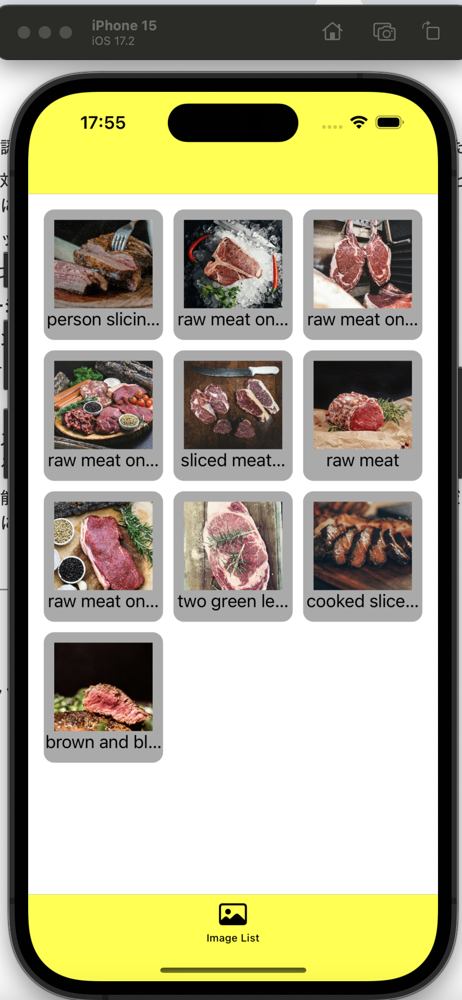
手順
UnsplashAPIを叩いてみる
- 2024/02現在、こちらのAPIは無料で使える画像検索サービスとなっております。以下の手順により登録、使用してください。
- こちらの記事の
1. Unsplash APIの開発者登録の手順に従い、AccessKeyとSecretKeyを取得する。 - curlまたはブラウザ等で、http://api.unsplash.com/search/photos?client_id=<ご自身のaccess_key>&query=meat を叩く。
すると、レスポンスは大まかに次のような形になっている。
{
"total": xxxx,
...
"results" : [
{
"id": "xxxxxx",
...
"alt_description": "xxxxxxxx",
...
"urls": {
"raw": "https://xxxxx",
...
"thumb": "https://xxxxx",
...
}
...
},
]
}
ApiClientを作成する
- APIを叩くための土台を提供するモデルであるApiClientを作成します。
- 内容はAPIを叩くのに共通しているパラメータ、共通の処理をまとめたprotocolである。
Presentationと同じ階層にInfrastructureディレクトリ、その下にNetworkディレクトリを作成し、NetworkにCommonRequest.swift、ApiClient.swift、ApiClientProtocol.swiftを作成する。CommonRequest.swiftに以下コードを記述し、APIを叩く際に共通で使うパラメータを用意する。
protocol CommonRequest {
var baseUrlString: String { get }
var path: String { get }
var method: String { get }
var headerFields: [String: String] { get }
var parameters: [String: String] { get }
}
extension CommonRequest {
var baseUrlString: String { "https://api.unsplash.com" }
var path: String { "/search/photos" }
var headerFields: [String: String] { [:] }
var parameters: [String: String]? { [:] }
}
ApiClientProtocol.swiftに以下コードを記載し、ApiClientで共通するメソッドのインタフェースを記述する。
import Foundation
protocol ApiClientProtocol {
func call<T: CommonRequest>(request: T,
completionHandler: @escaping (Result<Data, Error>) -> Void)
}
ApiClient.swiftに以下コードを記載し、ApiClientで共通するメソッドの具体を記述する。
struct ApiClient { }
extension ApiClient: ApiClientProtocol {
func call<T: CommonRequest>(request: T,
completionHandler: @escaping (Result<Data, Error>) -> Void) {
let request = createRequest(request)
let task = URLSession.shared.dataTask(with: request) { data, response, error in
if let error {
completionHandler(.failure(error))
return
}
guard let data,
let response = response as? HTTPURLResponse else {
completionHandler(.failure(NSError(domain: "",
code: 500)))
return
}
if response.statusCode == 200 {
completionHandler(.success(data))
} else {
completionHandler(.failure(NSError(domain: "",
code: response.statusCode)))
}
}
task.resume()
}
}
private extension ApiClient {
func createRequest(_ r: CommonRequest) -> URLRequest {
let queryStrings = r.parameters.map { "\($0.key)=\($0.value)" }.joined(separator: "&")
let searchURL = URL(string: r.baseUrlString + r.path + "?" + queryStrings)!
var request = URLRequest(url: searchURL)
request.httpMethod = r.method
r.headerFields.forEach {
request.addValue($0.value,
forHTTPHeaderField: $0.key)
}
return request
}
}
- Swiftはプロトコル指向の言語と言われており、実装と使用部分を区別する。そのため、あえて空の構造体にextensionを持たせるといった回りくどい書き方をしている。
デコードのためのmodelを用意する
- 次に、デコードやデコード後のデータ伝送のためのモデルである
DTO(Data Transfer Object)を作成していきます。
Domain中のModels/Imageにデコードやデコード後のデータ伝送のためのモデルを格納する、DTOsディレクトリを作成する。- このディレクトリに上記resultsを受け取るmodelである
ServerResponseDTOForImage.swiftを作成する。
struct ServerResponseDTOForImage: Codable {
let results: [ImageInfoDTO]
}
- 同様に
ImageInfoDTO.swiftを作成し、resultsの中身をdecodeする下記コードを記述する。
struct ImageInfoDTO: Codable {
let id: String
let title: String
let urls: ImageURLInfoDTO
}
extension ImageInfoDTO {
enum CodingKeys: String, CodingKey {
case id
case title = "alt_description"
case urls
}
}
- CodingKeysは、DTOモデル上で使うプロパティ名とAPIから受け取ったjson上でのキー(CodingKey)名が異なる際、このキーはこのプロパティに対応している、といったことを示す事ができるenumである。
- swiftでは、一階層以上のネストのものを一つのモデルでデコードする事ができない。そのため、urlsのデコード専用の
ImageURLInfoDTOを新たに作成する必要がある。
- 最後に、
ImageURLInfoDTO.swiftを作成し、下記コードを記述する。
struct ImageURLInfoDTO: Codable {
let raw: String
let thumb: String
}
ImageInfoDTO.swiftに戻り、ImageModelに変換するための関数、toModel()を作成する。
extension ImageInfoDTO {
func toModel() -> ImageModel {
return .init(id: id,
title: title,
imageURLString: urls.raw,
createdAt: createdAt)
}
}
UnsplashAPIを叩きデータを取得するためのクラス作成
- 何かしらデータを操作するクラスをxxxxServiceと呼ぶ。リポジトリ層のようなもの。
- 下記のようなフォルダ構成を作成する。
Domain
├ Services
| ├ App
| | ├ Implementation
| | └ Interface
| └ Network
| ├ Implementation
| └ Interface
└ Models
- ここで、Networkはモデルを扱う操作のうち、通信を伴うもの、Appは通信を伴うものとlocalのもの全体をまとめたものになります。
Network/InterfaceにImageNetworkService.swiftを作成、以下を記述。
protocol ImageNetworkService {
func getImages(_ input: ImageInput,
completionHandler: @escaping (Result<[ImageInfoDTO], Error>) -> Void)
}
Network/ImplementationにImageディレクトリを作成、DefaultImageNetworkService.swift、ImageRequest.swiftを作成し、それぞれ以下を記述する。
// DefaultImageNetworkService.swift
import Foundation
final class DefaultImageNetworkService {
let apiClient = ApiClient()
}
// MARK: - RestaurantNetworkService
extension DefaultImageNetworkService: ImageNetworkService {
// MARK: Images
func getImages(_ input: ImageInput,
completionHandler: @escaping (Result<[ImageInfoDTO], Error>) -> Void) {
apiClient.call(request: ImageRequest(input: input)) { result in
switch result {
case .success(let data):
do {
let decodedData = try JSONDecoder().decode(ServerResponseDTOForImage.self,
from: data)
completionHandler(.success(decodedData.results))
} catch {
completionHandler(.failure(error))
}
case .failure(let error):
completionHandler(.failure(error))
}
}
}
}
// ImageRequest.swift
struct ImageRequest: CommonRequest {
var headerFields: [String : String]
let method: String = "GET"
let parameters: [String: String]
init(input: ImageInput) {
let encodedSearchQuery = input.searchQuery.addingPercentEncoding(withAllowedCharacters: .urlPathAllowed)
var params: [ImageKeys: String] = [:]
params[.client_id] = <ご自身のUnsplash Apiのaccess_key>
params[.query] = encodedSearchQuery
var headers: [String: String] = [:]
headers["contentType"] = "application/json"
var rawKeyParams: [String: String] = [:]
params.forEach { rawKeyParams[$0.key.rawValue] = $0.value }
parameters = rawKeyParams
headerFields = headers
}
}
struct ImageInput {
let searchQuery: String
}
- 同様に
App/Implementation配下にDefaultImageAppService.swift,App/Interface配下にImageAppService.swiftを作成、以下を記述。
// DefaultImageAppService.swift
final class DefaultImageAppService {
// MARK: Private properties
private let networkService: ImageNetworkService
init(networkService: ImageNetworkService = DefaultImageNetworkService()) {
self.networkService = networkService
}
}
// MARK: - ImageAppService
extension DefaultImageAppService: ImageAppService {
func getImages(_ input: ImageInput,
completionHandler: @escaping (Result<[ImageModel], Error>) -> Void) {
networkService.getImages(input) { [weak self] result in
guard let self else { return }
switch result {
case .success(let images):
completionHandler(.success(images.map { $0.toModel() }.sorted { $0.createdAt < $1.createdAt }))
case .failure(let error):
completionHandler(.failure(error))
}
}
}
}
// ImageAppService.swift
protocol ImageAppService {
func getImages(_ input: ImageInput,
completionHandler: @escaping (Result<[ImageModel], Error>) -> Void)
}
AppServiceを使い、実際にデータを表示
ImageListViewModel.swiftに以下を追記。
protocol ImageListViewModelInput {
func applyData(completionHandler: @escaping ([ImageListCellViewModel]) -> Void)
}
...
typealias ImageListViewModelProtocol = ImageListViewModelOutput & ImageListViewModelInput // <-- 追加
extension ImageListViewModel {
struct Input {
let imageAppService: ImageAppService
}
}
final class ImageListViewModel {
// MARK: Private properties
private let input: Input
...
init(input: Input) {
self.input = input
// fetchData()は削除
}
}
// MARK: - Private functions
private extension ImageListViewModel {
// fetchData()は削除
func makeCellViewModel(_ model: ImageModel) -> ImageListCellViewModel {
.init(input: .init(title: model.title,
imageURLString: model.imageURLString))
}
}
// MARK: - ImageListViewModelOutput
extension ImageListViewModel: ImageListViewModelOutput {
var rows: [ImageListCellViewModel] {
return data
}
}
// MARK: - ImageListViewModelInput
extension ImageListViewModel: ImageListViewModelInput {
func applyData(completionHandler: @escaping ([ImageListCellViewModel]) -> Void) {
input.imageAppService.getImages(.init(searchQuery: "meat")) { [weak self] result in
guard let self else { return }
switch result {
case .success(let images):
completionHandler(images.map { self.makeCellViewModel($0) })
case .failure(let error):
// TODO: Error handling
print(error)
}
}
}
}
ImageListViewController.swiftのsetupBindingsを下記に書き換える
func setupBindings() {
viewModel.applyData { [weak self] imageRows in
DispatchQueue.main.async {
self?.dataSource.apply(imageRows)
}
}
}
- これで、実際のデータが表示されるようになりました。
各技術の説明
Protocol志向
- クラスだとメソッドのオーバーライドやクラス内での共有など、オブジェクト指向特有の問題があったため、それを克服するためにprotocolを使ってプログラミングをしようとしたもの。
URLSession
- Foundationにもともと組み込まれている、ネットワーク通信のためのクラス。
- Swift公式のライブラリであるため、他製ライブラリを使う場合に比べてコードのメンテがずっと続く利点があるが、コードが複雑になりやすいデメリットがある。
Services
- ネットワークを用いた通信、またはローカルストレージへの通信を伴う、データの操作を担う処理群の総称。
- データは多くはDTO modelを介して操作される。
各技術の理解
概要
インターネットに繋がっていなくてもデータを取得できるようにlocal storageに保存したり、複数ユーザーでデータが共有できるようにネット上にデータを保存するための実装をしていきます。
本章で学ぶこと
- RealmSwift
- Firebase(FireStore)
完成イメージ
online | offline |
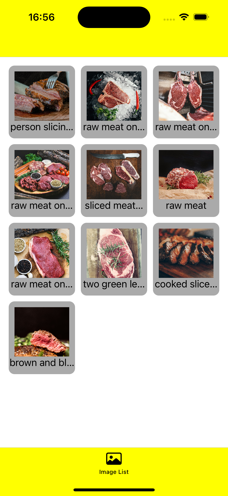 | 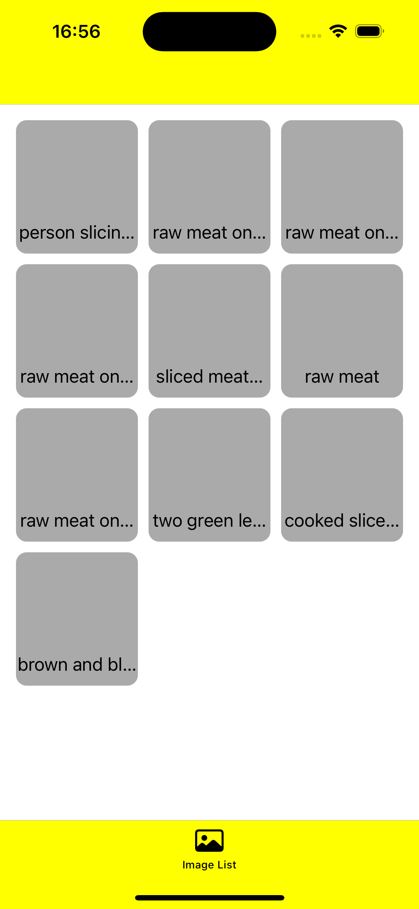 |
手順
localに保存するためのライブラリ、RealmSwift追加
- まず、下記の手順でlocalに保存するために頻繁に使われるライブラリであるRealmをimportする。
- 下図のように、アプリ名 > PROJECTのアプリ名 >
Package Dependencies> +ボタンを押す。
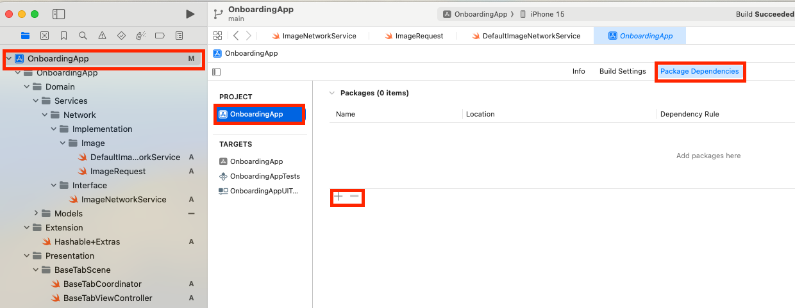
- 右上の検索窓で
https://github.com/realm/realm-swift.gitを検索し、右下のAdd Packagesをクリックする。
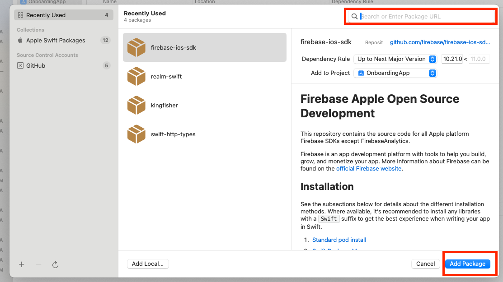
- 選択画面が出てくるので、
Realm、RealmSwiftを選択し、Add Packageを押すと、ライブラリが追加される。 - TARGETS > アプリ名 > Frameworks, Libraries, and Embedded Content への、先ほどの二つ追加も忘れずに行う。
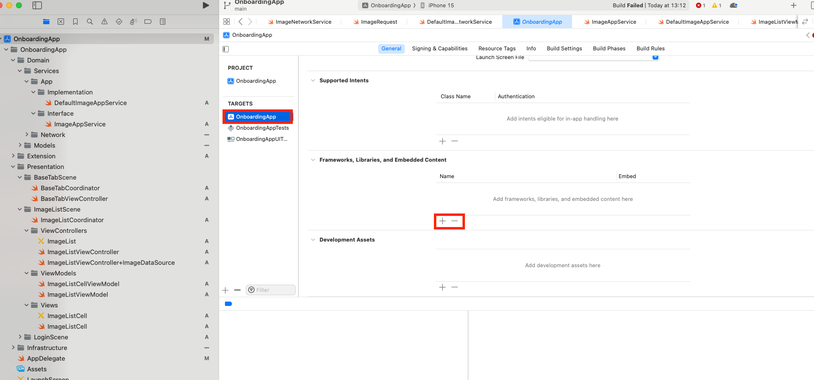
localに保存するためのモデルを作る
- Realmでは、
Objectというクラスを継承したモデルを用います。
ModelsのImageディレクトリでImageObject.swiftを作成し、下記コードを記述する。
import RealmSwift
class ImageObject: Object {
@Persisted(primaryKey: true) var id: String
@Persisted var title: String
@Persisted var imageURLString: String
@Persisted var createdAt: String
}
extension ImageObject {
convenience init(id: String,
title: String,
imageURLString: String,
createdAt: String) {
self.init()
self.id = id
self.title = title
self.imageURLString = imageURLString
self.createdAt = createdAt
}
}
- Objectは各プロパティの値を入れてインスタンス化するのに、独自のinitメソッドを定義する必要があります。convenienceは他のイニシャライザの存在のもと、追加でイニシャライザを定義したい時に使われる修飾子。
@Persistedで囲われた値がローカルに永続保存されるデータとなる。
Infrastructure/StorageディレクトリにRealmインスタンス初期化のためのクラスを記述するため、RealmStorage.swiftを作る。
- 通常、realmのインスタンス化は
try! Realm()により行うことができるが、このコードだとスキーマの変更をした際にデータ不整合でアプリがクラッシュしてしまう。スキーマを更新してもクラッシュすることを防ぐよう、下記のコードでマイグレーションを行えるようにする。
import RealmSwift
struct RealmConstants {
static let lastDBVersion: UInt64 = 1
}
final class RealmStorage {
// MARK: Properties
private var realm: Realm {
guard let realm = try? Realm(configuration: RealmStorage.config()) else {
fatalError("Could not create Realm")
}
realm.refresh()
return realm
}
}
extension RealmStorage {
static func config() -> Realm.Configuration {
var config = Realm.Configuration()
config.schemaVersion = RealmConstants.lastDBVersion
config.migrationBlock = { migration, oldSchemaVersion in
if oldSchemaVersion < RealmConstants.lastDBVersion {
// ここに変更したmodelデータを全部置き換えるコードを記述する。
}
}
return config
}
}
- まず、上記コードからrealmインスタンスを呼び出すと、realm初期化時にマイグレーションのための設定、
Realm.Configurationが呼ばれる。具体的には、schemaVersionとmigrationBlockを上記コードのように設定し、DBに変更があるたびにschemaVersionを上げることでマイグレーションが正常に起こるようになる。 - 不整合の原因は既存データのmodelスキーマと新規作成スキーマが合わないことによって生じるので、既存データを新規に新しいデータに置き換えるコードをif文中に書いていくイメージである。
- トランザクション実行中は他のトランザクションを実行しないようにするためのextension,
Realm+SafeWrite.swiftをExtensionディレクトリに作成する。
import RealmSwift
extension Realm {
public func safeWrite(_ block: (() throws -> Void)) throws {
if isInWriteTransaction {
try block()
} else {
try write(block)
}
}
}
データ保存のためのServiceを作成する
Servicesディレクトリ配下にStorageを作成し、App、Network同様にImplementation、Interfaceを作成する。Interface配下に作成するImageStorageService.swift中で下記のように保存(上書き)、取得用プロトコルを作成する。
protocol ImageStorageService {
func saveImages(_ images: [ImageDTO])
func getImages(completionHandler: @escaping ([ImageDTO]) -> Void)
}
Implementation配下に作成するDefaultImageStorageService.swift中で具体処理を記述する。
import Foundation
import RealmSwift
final class DefaultImageStorageService {
// MARK: Private properties
private let configuration: Realm.Configuration
private var realm: Realm {
guard let realm = try? Realm(configuration: configuration) else {
fatalError("Failed to initialize Realm.")
}
return realm
}
// MARK: Lifecycle functions
init(configuration: Realm.Configuration = RealmStorage.config()) {
self.configuration = configuration
}
}
// MARK: - ImageStorageService
extension DefaultImageStorageService: ImageStorageService {
func saveImages(_ images: [ImageDTO]) {
DispatchQueue.global().async { [weak self] in
guard let self else { return }
do {
let imageObjects = images.map { ImageObject(id: $0.id,
title: $0.title,
imageURLString: $0.imageURLString,
createdAt: $0.createdAt)}
try self.realm.safeWrite {
self.realm.add(imageObjects,
update: .all)
}
} catch {
print(error)
}
}
}
func getImages(completionHandler: @escaping ([ImageDTO]) -> Void) {
DispatchQueue.global().async { [weak self] in
guard let self else { return }
let images = self.realm.objects(ImageObject.self)
completionHandler(images.map { $0.toDTO() }.sorted { $0.createdAt < $1.createdAt })
}
}
}
.objects(クラス名.self)でクラスのオブジェクト全てを取得でき、また.add(オブジェクト)でオブジェクトの保存ができる。- 保存したオブジェクトはアプリを消去するまでlocal storageに残る。
StorageServiceの組み込み
- getしたデータをすべてlocalに保存するよう、AppServiceの処理を書き換えます。
DefaultImageAppService.swift,ImageAppService.swiftをそれぞれ、下記のように書き換える。
final class DefaultImageAppService {
...
private let storageService: ImageStorageService
init(networkService: ImageNetworkService = DefaultImageNetworkService(),
storageService: ImageStorageService = DefaultImageStorageService()) { // <-- 追加
self.networkService = networkService
self.storageService = storageService // <-- 追加
}
}
// MARK: - ImageAppService
extension DefaultImageAppService: ImageAppService {
func getImages(_ input: ImageInput,
cacheCompletionHandler: @escaping ([ImageModel]) -> Void,
completionHandler: @escaping (Result<[ImageModel], Error>) -> Void) {
storageService.getImages { cachedImages in
cacheCompletionHandler(cachedImages.map { $0.toModel() })
}
networkService.getImages(input) { [weak self] result in
switch result {
case .success(let images):
self?.storageService.saveImages(images.map { .init(id: $0.id,
title: $0.title,
imageURLString: $0.urls.raw,
createdAt: $0.createdAt) })
completionHandler(.success(images.map { $0.toModel() }.sorted { $0.createdAt < $1.createdAt }))
case .failure(let error):
completionHandler(.failure(error))
self?.storageService.getImages { cacheImages in
completionHandler(.success(cacheImages.map { $0.toModel() }))
}
}
}
}
}
protocol ImageAppService {
func getImages(_ input: ImageInput,
cacheCompletionHandler: @escaping ([ImageModel]) -> Void,
completionHandler: @escaping (Result<[ImageModel], Error>) -> Void)
...
}
- これでnetworkがオフラインでも、前回に取得したデータが表示されるようになりました。
データの保存取得テスト
- 画像こそ見えませんが、テキストは全件ローカルから読み出され、一覧表示されているのがわかります。
Firebaseのセットアップ
- ここからはFirebaseの一機能であるFirestoreを使って、ネット上にデータを保存してきます。
- https://console.firebase.google.com/ にアクセスし、任意の名前でプロジェクトを追加してください(Analyticsはなくても大丈夫です)。
- iOSのボタンを押し、BundleIDの入力欄に、アプリ名 > Identityに載っているBundle Identifierを入力します。
GoogleService-info.plistをダウンロードしてください。そしてXcodeの指示されたルートにこのファイルをドラッグ&ドロップし、画像の通りのチェックマークで保存してください。
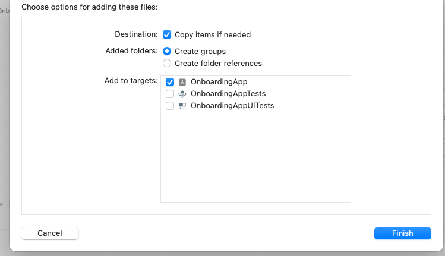
- 指示された通りに、firebaseをAddPackageします。
FirebaseFirestoreSwiftを選択して追加してください。 - Firestoreのページに飛び、テストモードでデータベースを作成してください。(プロビジョニングに若干の時間がかかります)
- 作成されたデータベースのページの、「ルール」欄を下記に書き換え、「公開」する。
service cloud.firestore {
match /databases/{database}/documents {
match /{document=**} {
allow read, write: if true; <-- false を trueにする
}
}
}
- これでFirebaseの準備は完了です。次に、Firebaseを使った操作を記述するクラスを作成していきます。
Firebaseを使うAppServiceを作成する
- 今まで同様、
Services/App/InterfaceにFirebaseAppService.swift,Services/App/ImplementationにDefaultFirebaseAppService.swiftを作成する。 FirebaseAppService.swiftに下記を記述し、protocol定義する。
protocol FirebaseAppService {
static var sharedInstance: FirebaseAppService { get }
func createData(to collectionName: String,
of document: String,
data: [String: String])
func readAll<T: Codable>(from collectionName: String,
type: T.Type,
completionHandler: @escaping (Result<[T]?, Error>) -> Void)
}
struct CollectionName {
static let images = "images"
}
- sharedInstanceはシングルトンデザインパターンのために定義する変数で、これによりインスタンスの生成を一個に限定することができる。ここでは、Firebaseの初期化コードを一回に限定するために用いている。コードでどのような使い方をするかは次項。
- Firestoreの詳しい使い方については後述するが、CollectionというDBにdocumentというキーを持ったデータを格納していくイメージである。
ImageをFirestoreに保存、取得
ImageAppService.swiftとDefaultImageAppService.swiftに、ImageModelをfirestore経由で保存・取得するための関数をそれぞれ追記する。
ImageAppService.swift
protocol ImageAppService {
...
func saveImage(_ image: ImageModel)
func getAllImages(completionHandler: @escaping (Result<[ImageModel], Error>) -> Void)
}
DefaultImageAppService.swift
final class DefaultImageAppService {
// MARK: Private properties
...
private let firebaseAppService: FirebaseAppService
init(...
firebaseAppService: FirebaseAppService = DefaultFirebaseAppService.sharedInstance) {
...
self.firebaseAppService = firebaseAppService
}
}
// MARK: - ImageAppService
extension DefaultImageAppService: ImageAppService {
...
func saveImage(_ image: ImageModel) {
firebaseAppService.createData(to: CollectionName.images,
of: image.id,
data: ["id": image.id,
"title": image.title,
"imageURLString": image.imageURLString,
"createdAt": image.createdAt])
}
func getAllImages(completionHandler: @escaping (Result<[ImageModel], Error>) -> Void) {
firebaseAppService.readAll(from: CollectionName.images,
type: ImageDTO.self) { result in
switch result {
case .success(let images):
completionHandler(.success(images.map { $0.toModel() }))
case .failure(let error):
completionHandler(.failure(error))
}
}
}
}
ImageListViewModel.swiftのapplyDataを下記に書き換える。
// MARK: - ImageListViewModelInput
extension ImageListViewModel: ImageListViewModelInput {
func applyData(completionHandler: @escaping ([ImageListCellViewModel]) -> Void) {
input.imageAppService.getImages(.init(searchQuery: "meat")) { [weak self] result in
guard let self else { return }
switch result {
case .success(let images):
// completionHandler(images.map { self.makeCellViewModel($0) })
// ひとまず、取得できたデータを一件のみ、firestoreに保存する。
self.input.imageAppService.saveImage(images[0])
// self.input.imageAppService.getAllImages { result in
// switch result {
// case .success(let images):
// completionHandler(images.map { self.makeCellViewModel($0) })
// case .failure(let error):
// print(error)
// }
// }
case .failure(let error):
// TODO: Error handling
print(error)
}
}
}
}
- プロジェクトをビルドすると、データが保存されている。
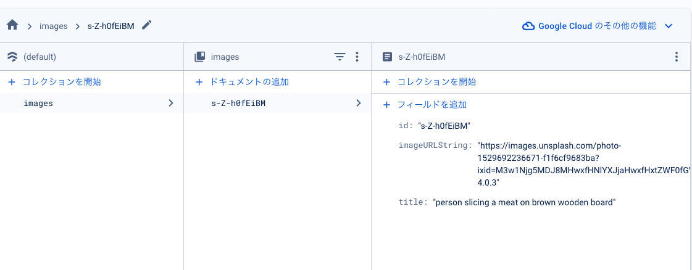
ImageListViewModel.swiftのapplyDataのコメントアウトを下記のように付け替え、再びビルドすると保存したデータのみが表示される。
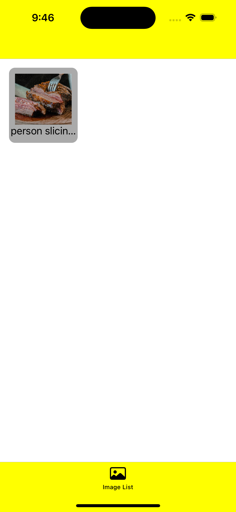
- 保存できることがわかった上で、
applyDataを元に戻します。
// MARK: - ImageListViewModelInput
extension ImageListViewModel: ImageListViewModelInput {
func applyData(completionHandler: @escaping ([ImageListCellViewModel]) -> Void) {
input.imageAppService.getImages(.init(searchQuery: "meat")) { [weak self] result in
guard let self else { return }
switch result {
case .success(let images):
completionHandler(images.map { self.makeCellViewModel($0) })
case .failure(let error):
// TODO: Error handling
print(error)
}
}
}
}
各技術の説明
Realm
- localにデータを保存するためのライブラリ。
- Swiftでlocalに保存する方法はいくつかあるが、その中でもこちらはDBのリレーションが定義できることに強みがある。
- Objectと呼ばれるデータ型でデータを保存する。カラムとしてサポートされているデータ型は、
Bool、Int、Int8、Int16、Int32、Int64、Double、Float、String、Date、Dataである。- ただし、一度ビルドした後にカラムを変更するとビルドの度に不整合エラーが出るので、変更の都度マイグレーション設定をする必要がある。
- CRUDの記述も簡単にできる。
Firebase
- モバイルアプリだけでなく、様々なプラットフォームにPaaSとして様々な機能を提供する、Googleのサービス。複数サービスを横断してデータの授受ができるところに強みがある。
- FirebaseAuthenticationは認証機能全般を提供しており、内部実装を意識せずに簡単にログイン機能/ログアウト機能を作成できる。
- FirestoreはNoSQLを使用したデータ保存のライブラリで、CollectionというまとまりにdocumentというIDを保存し、各documentごとにデータを格納していく。
- 各documentにcollectionを生やし、サブコレクションとしたり、Referenceを付与することでリレーションの構築が行える。
各技術の理解
概要
async/awaitを使った非同期処理を学び、取得したデータをリアルタイムで反映させる。
本章で学ぶこと
完成イメージ
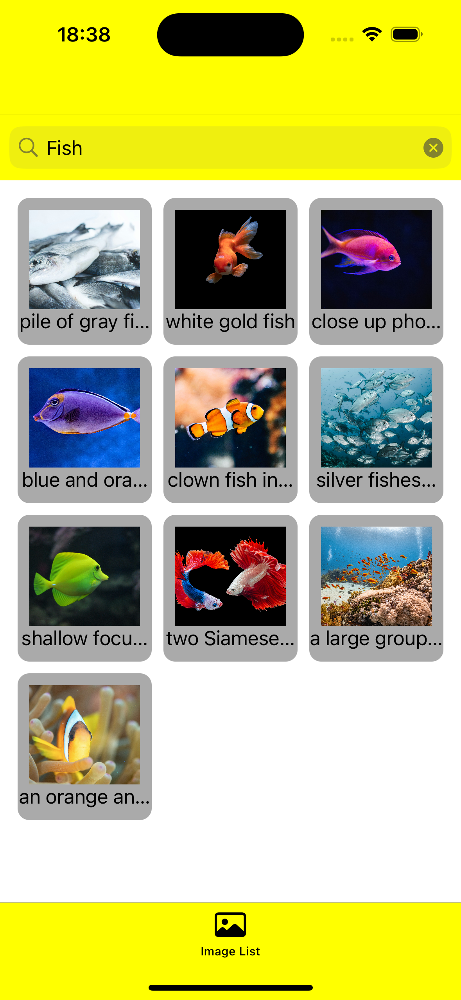
手順
画像ロード時のワーニングを消す
ImageListCell.swiftのfunc setImage()関数を以下に書き換える。
func setImage() {
Task {
if let url = URL(string: viewModel.imageURLString) {
let (data, _) = try await URLSession.shared.data(for: URLRequest(url: url))
Task { @MainActor in
imageView.image = UIImage(data: data)
}
}
}
}
- URLSession.shared.dataはasync関数であり、awaitをつけることで、その非同期関数の実行結果が出次第、後続の処理に進むようになる。
- Taskは時間のかかる処理を他のスレッド内に移譲する、DispatchQueueのようなもの。
@MainActorをつけるとメインスレッドでの実行になる。async/await処理は必ずTask内で行う必要がある。- UIの変更に関する処理は全てメインスレッド内で行う必要がある。
- これで、紫色のワーニングは出なくなりました。
検索可能にする
ImageListViewController.storyboard上に、UISearchBarを"+"ボタンから選択して載せる。- 図のように、
ImageCollectionViewの上端をSearchBarの下端に合わせ、そのほかはsafeAreaに沿って広がるようにAutolayoutの設定を行う。
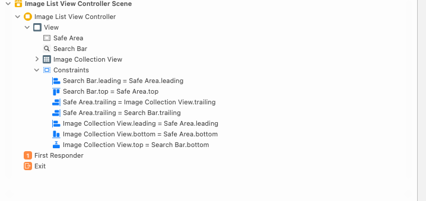
ImageListViewController.swift上でIBOutlet接続をし、下記のようなコードを記述する。
import UIKit
final class ImageListViewController: UIViewController {
...
@IBOutlet private var searchBar: UISearchBar! {
didSet {
searchBar.backgroundColor = .yellow
searchBar.layer.borderColor = UIColor.yellow.cgColor
searchBar.searchBarStyle = .minimal
searchBar.delegate = self
}
}
...
}
...
extension ImageListViewController: UISearchBarDelegate {
func searchBarSearchButtonClicked(_ searchBar: UISearchBar) {
Task { [weak self] in
guard let text = searchBar.text,
let self
else {
return
}
let imageRows = try await self.viewModel.search(text)
self.dataSource.apply(imageRows)
}
}
}
ImageListViewModel.swift内にsearch関数を追加する。
protocol ImageListViewModelInput {
...
func search(_ text: String) async throws -> [ImageListCellViewModel]
}
...
// MARK: - ImageListViewModelInput
extension ImageListViewModel: ImageListViewModelInput {
...
func search(_ text: String) async throws -> [ImageListCellViewModel] {
var imageRows = [ImageListCellViewModel]()
return try await withCheckedThrowingContinuation({ continuation in
input.imageAppService.getImages(.init(searchQuery: text),
cacheCompletionHandler: { cached in
imageRows = cached.map { self.makeCellViewModel($0) }
}) { [weak self] result in
guard let self else { return }
switch result {
case .success(let images):
imageRows = images.map { self.makeCellViewModel($0)}
case .failure(let error):
continuation.resume(throwing: error)
}
continuation.resume(returning: imageRows)
}
})
}
}
applyData()関数、rowsはもう不要なので、使用部分と関数自体、変数自体を全て消す。
applyData()ImageListViewController.swiftのsetupBindings()内ImageListViewModel.swiftのImageListViewModelInput, extensionのImageListViewModelInput内 - 関数自体を消すと赤色のワーニングが出るので、それら全てを消せば大丈夫です。rowsImageListViewModel.swiftのImageListViewModelOutput, extensionのImageListViewModelOutput内
Observerパターンを使って書き換える
- このままでも検索結果がリアルタイムで反映されるのですが、Inputメソッド(つまり、ViewModelに影響を及ぼす方向の処理)であるはずの
search()が、ViewへのOutput(つまり、Viewに影響を与える処理)の役割も果たしており、微妙です。- 本来なら、
search()はViewModel内でデータを取得するトリガーとなる処理で、取得されたデータをViewに反映するのは別のOutputのメソッド(または変数)でなくてはいけないはずです。
- 本来なら、
- そこで登場するのがObserverパターンによる実装です。変数がリアルタイムでViewModelでの変更をViewに伝えることができます。
ImageListViewModel.swiftにObserverとなるSubjectを記述する。
protocol ImageListViewModelOutput {
var imageListCellViewModelsSubject: AsyncStream<[ImageListCellViewModel]> { get }
}
...
final class ImageListViewModel {
...
private var imagesHandler: (([ImageListCellViewModel]) -> Void)? // <-- 追加
...
}
...
// MARK: - ImageListViewModelOutput
extension ImageListViewModel: ImageListViewModelOutput {
var imageListCellViewModelsSubject: AsyncStream<[ImageListCellViewModel]> {
return AsyncStream { continuation in
imagesHandler = { images in
continuation.yield(images)
}
}
}
}
...
AsyncStreamは値が後から入ってくるListのようなイメージ。(そのため、値が入ってくるのを待っている状態であり、値が入ってきた際にawaitの値に対応した処理が行える。)AsyncStreamに値を入れる際には、クロージャ内のcontinuationのyieldメソッドの引数に値を入れれば良い。- こちらは、
imagesHandler()関数が呼ばれた際、引数であるimagesがAsyncStreamに入る。 - 結果、
imageListCellViewModelsSubjectに対して施したfor await部分にimagesが代入される。詳しくは後述。
- こちらは、
ImageListViewController.swift内でviewModelとviewの紐付け(バインディング)を行うコードを記述する。
final class ImageListViewController: UIViewController {
...
deinit {
imagesTask?.cancel()
...
}
}
...
private extension ImageListViewController {
func setupBindings() {
imagesTask = Task { @MainActor [weak self] in
guard let self else { return }
for await items in self.viewModel.imageListCellViewModelsSubject {
self.dataSource.apply(items)
}
}
}
}
...
deinitは、インスタンスへの参照を行うものがなくなり、インスタンスが除去される時に呼ばれる関数。毎deinitごとに形成しているObserverをキャンセルしたいため、上記コードを記述している。
search()をちゃんとしたInputの形に書き換える。
protocol ImageListViewModelInput {
func search(_ text: String)
}
...
// MARK: - ImageListViewModelInput
extension ImageListViewModel: ImageListViewModelInput {
func search(_ text: String) {
var images: [ImageListCellViewModel]?
input.imageAppService.getImages(.init(searchQuery: text),
cacheCompletionHandler: { [weak self] cached in
guard let self else { return }
images = cached.map { self.makeCellViewModel($0) }
}) { [weak self] result in
guard let self else { return }
switch result {
case .success(let remoteImages):
images = remoteImages.map{ self.makeCellViewModel($0)}
case .failure(let error):
print(error)
}
self.imagesHandler?(images ?? [])
}
}
}
ImageListViewController.swiftのUISearchBarDelegate部分を書き換える。
extension ImageListViewController: UISearchBarDelegate {
func searchBarSearchButtonClicked(_ searchBar: UISearchBar) {
guard let text = searchBar.text else { return }
self.viewModel.search(text)
}
}
- これでObserverパターンでリアルタイムで検索結果を変えることができるようになりました。
取得のたびにキャッシュの画像を全削除するようにする
- このままだとキャッシュに画像を取得した分だけ無限にデータが溜まっていくため、ネットワークから取得した画像を保存する直前に前に取得した画像データを全て削除するように処理を書き換えます。
ImageStorageService.swiftに下記関数を追加する。
protocol ImageStorageService {
...
func deleteAllImages(completionHandler: @escaping () -> Void)
}
DefaultImageStorageService.swiftに下記関数を追加する。
func deleteAllImages(completionHandler: @escaping () -> Void) {
DispatchQueue.global().async { [weak self] in
guard let self else { return }
do {
try self.realm.safeWrite {
let objectsToDelete = self.realm.objects(ImageObject.self)
self.realm.delete(objectsToDelete)
}
completionHandler()
} catch {
completionHandler()
}
}
}
DefaultImageStorageService.swiftのgetImagesを下記に書き換える。
func getImages(_ input: ImageInput,
cacheCompletionHandler: @escaping ([ImageModel]) -> Void,
completionHandler: @escaping (Result<[ImageModel], Error>) -> Void) {
storageService.getImages { cachedImages in
cacheCompletionHandler(cachedImages.map { $0.toModel() })
}
networkService.getImages(input) { [weak self] result in
switch result {
case .success(let images):
self?.storageService.deleteAllImages {
self?.storageService.saveImages(images.map { .init(id: $0.id,
title: $0.title,
imageURLString: $0.urls.raw,
createdAt: $0.createdAt) })
}
completionHandler(.success(images.map { $0.toModel() }.sorted { $0.createdAt < $1.createdAt }))
case .failure(let error):
completionHandler(.failure(error))
self?.storageService.getImages { cacheImages in
completionHandler(.success(cacheImages.map { $0.toModel() }))
}
}
}
}
- これでlocalの画像データを全て削除してから改めて画像を保存するようになりました。
各技術の説明
async/await
- 非同期で行う処理を同期処理のような書き方で記述するために追加された機能。Closureを使うものに比べてネストが深くなりにくい。
asyncで実行した、時間のかかる関数の結果を待ち、結果が出てから次の処理に進む。- 上から下に順番に実行されるようになり、非常に可読性が上がる。
Task
- 非同期の処理を行う作業単位。全ての非同期処理が何らかの
Taskとして実行される。 - メインスレッドで行う
Task(UIに関する処理など)は@MainActorという修飾子を付与する。
Observerパターン
- ソフトウェア開発において良い方法とされるノウハウの蓄積であるデザインパターンの一種。
- 観察対象に何かしらの変更があった際に、全ての観察者に通知される仕組みのこと。
- 本項目においては、
imageListCellViewModelsSubjectが観察対象(Observable)であり、それがImageListViewControllerにバインディングしたTaskによって観察される。 - こちらを用いると、ViewModelへの変更(Input)とその変更に対するViewの変更(Output)を分離しやすくなる。
各技術の理解
概要
何かしらの不具合が生じた際に、それを適切にユーザーに伝える方法(エラーハンドリング方法)を学んでいきます。
本章で学ぶこと
- UIAlertController
完成イメージ
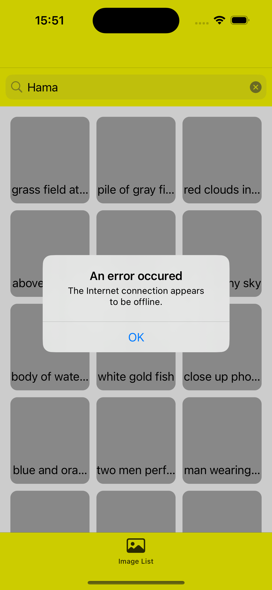
手順
エラー表示用のUIViewController Extensionの作成
ExtensionディレクトリにUIViewController+Extras.swiftを作成し、以下を記述する。
import UIKit
extension UIViewController {
func handleGeneralError(_ error: Error,
onDismissHandler: (() -> Void)? = nil) {
let alert = UIAlertController(title: "An error occured",
message: error.localizedDescription,
preferredStyle: .alert)
alert.addAction(.init(title: "OK",
style: .default) {_ in
onDismissHandler?()
})
self.present(alert,
animated: true)
}
}
- ここで表示するエラーによってはメッセージを変えたり、アラート内のボタン押下時のアクションの変更が行えたりします。
- 引数内の
onDismissHandler()では、OKボタンを押した後の動きを定義できます。
ImageListViewModel.swiftにリアルタイムでErrorを表示するためのSubjectを作成する。
protocol ImageListViewModelOutput {
...
var errorsSubject: AsyncStream<ErrorsModel> { get }
}
...
final class ImageListViewModel {
...
private var errorsHandler: ((ErrorsModel) -> Void)?
...
}
...
// MARK: - ImageListViewModelOutput
extension ImageListViewModel: ImageListViewModelOutput {
...
var errorsSubject: AsyncStream<ErrorsModel> {
return AsyncStream { continuation in
errorsHandler = { error in
continuation.yield(error)
}
}
}
}
// MARK: - ImageListViewModelInput
extension ImageListViewModel: ImageListViewModelInput {
func search(_ text: String) {
var images: [ImageListCellViewModel]?
input.imageAppService.getImages(.init(searchQuery: text),
cacheCompletionHandler: { [weak self] cached in
guard let self else { return }
images = cached.map { self.makeCellViewModel($0) }
}) { [weak self] result in
guard let self else { return }
switch result {
case .success(let remoteImages):
images = remoteImages.map{ self.makeCellViewModel($0)}
case .failure(let error):
self.errorsHandler?(error) <-- // 変更
}
self.imagesHandler?(images ?? [])
}
}
}
- 2.によってSubjectに送出されたエラーを受け取るための関数を
ImageListViewController.swiftに記述する。
final class ImageListViewController: UIViewController {
...
private var imagesTask: Task<Void, Never>?
...
deinit {
...
errorsTask?.cancel()
}
}
private extension ImageListViewController {
func setupBindings() {
...
errorsTask = Task { @MainActor [weak self] in
guard let self else { return }
for await error in viewModel.errorsSubject {
self.handleGeneralError(error)
}
}
}
}
...
- 試しにWIFIを切って、ネットワークがない状態を作り出してみてください。完成イメージのようなポップアップが表示されたかと思います。
エラーの細分化
- 次に、エラーによって表示を変えるために、エラーを細分化するためのモデルを作成していきます。
- Swiftのエラーハンドリングでは、起こりうるエラーをenumで分類し、各Error送出場所に割り当てるといった方法がよく用いられます。
Domain/ModelsにErrorsDTO.swift,ErrorsModel.swiftを作成し、それぞれ以下を記述する。
// ErrorsDTO.swift
enum NetworkError {
case noInternetConnection
case timeout
case others(Error)
}
struct ServerError {
let statusCode: Int
let message: String
}
enum ErrorType {
case general
case network(NetworkError)
case server(ServerError)
case storage(String)
}
struct ErrorsDTO: Error {
var type: ErrorType
}
extension ErrorsDTO {
func toModel() -> ErrorsModel {
.init(type: type)
}
}
- ErrorTypeに注目してください。現時点で起こりうるエラーは、インターネットの接続エラー、UnsplashAPIやFirebaseによるサーバーエラー、Realmによるストレージエラー、Swiftの内部エラーの4通りに大分できます。
- さらに、NetworkErrorはインターネット無接続、タイムアウトに分けられます。
- このように、考えうるエラーを全て洗い出し、enumにしていきます。
struct ErrorsModel: Error {
var type: ErrorType
}
extension ErrorsModel {
var title: String {
switch type {
case .general:
return "Unknown error occured"
case .network(let networkError):
switch networkError {
case .noInternetConnection:
return "Connection failed"
case .timeout:
return "Connection time out"
case .others(let error):
return "Network error occured"
}
case .server:
return "Server error occured"
case .storage:
return "Storage operation failed"
}
}
var description: String {
switch type {
case .general:
return "please retry after a while."
case .network(let networkError):
switch networkError {
case .noInternetConnection:
return "there is no internet connection"
case .timeout:
return "the request is timed out"
case .others(let error):
return error.localizedDescription
}
case .server(let serverError):
return serverError.message
case .storage(let description):
return description
}
}
}
- ここでは、Alertに表示する文章を分類しています。
定義したエラーを元に、既存のエラーハンドリングを書き換える
各技術の説明
UIAlertController
- アラートを表示するためのViewController。ViewControllerと同じく、
present()によって呼び出す。 - ボタンを押した際に行う処理は、
UIAlertAction内に記述する。